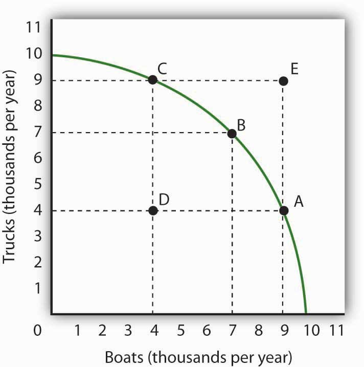
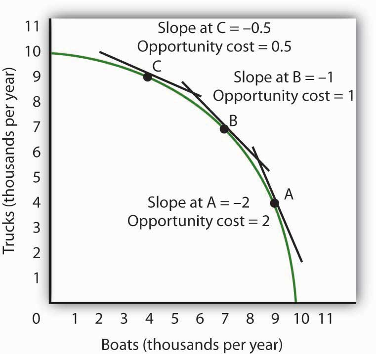
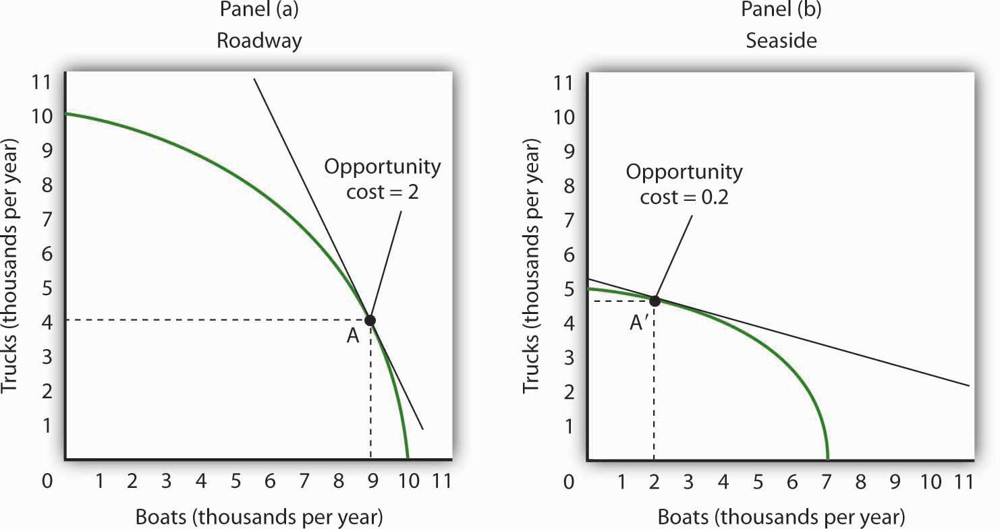
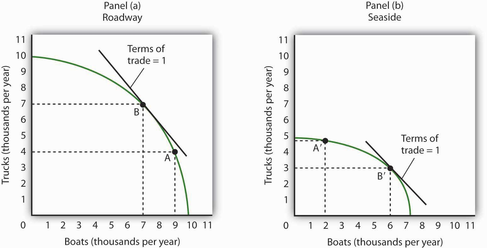
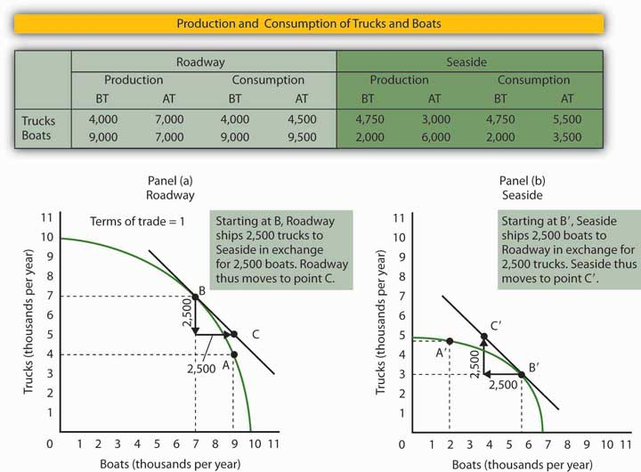

To model the effects of trade, we begin by looking at a hypothetical country that does not engage in trade and then see how its production and consumption change when it does engage in trade.
Suppose the hypothetical country of Roadway is completely isolated from the rest of the world. It neither exports nor imports goods and services. We shall use the production possibilities model to analyze Roadway’s ability to produce goods and services.
A production possibilities curve illustrates the production choices available to an economy. Recall that the production possibilities curve for a particular country is determined by the factors of production and the technology available to it.
Figure 17.1 "Roadway’s Production Possibilities Curve" shows a production possibilities curve for Roadway. We assume that it produces only two goods—trucks and boats. Roadway must be operating somewhere on its production possibilities curve or it will be wasting resources or engaging in inefficient production. If it were operating inside the curve at a point such as D, then a combination on the curve, such as B, would provide more of both goods (Roadway produces 3,000 more trucks and 3,000 more boats per year at B than at D). At any point inside the curve, Roadway’s production would not be efficient. Point E suggests an even higher level of output than points A, B, or C, but because point E lies outside Roadway’s production possibilities curve, it cannot be attained.
Figure 17.1 Roadway’s Production Possibilities Curve
The production possibilities curve for Roadway shows the combinations of trucks and boats that it can produce, given the factors of production and technology available to it. To maximize the value of total production, Roadway must be operating somewhere along this curve. Production at point D implies that Roadway is failing to use its resources fully and efficiently; production at point E is unobtainable.
We have learned that the absolute value of the slope of a production possibilities curve at any point gives the quantity of the good on the vertical axis that must be given up to produce an additional unit of the good on the horizontal axis. It thus gives the opportunity cost of producing another unit of the good on the horizontal axis.
Figure 17.2 Measuring Opportunity Cost in Roadway
The slope of the production possibilities curve at any point is equal to the slope of a line tangent to the curve at that point. The absolute value of the slope equals the opportunity cost of increased boat production. Moving down and to the right along its production possibilities curve, the opportunity cost of boat production increases; this is an application of the law of increasing opportunity cost.
Figure 17.2 "Measuring Opportunity Cost in Roadway" shows the opportunity cost of producing boats at points A, B, and C. Recall that the slope of a curve at any point is equal to the slope of a line drawn tangent to the curve at that point. The slope of a line tangent to the production possibilities curve at point B, for example, is −1. The opportunity cost of producing one more boat is thus one truck. As the law of increasing opportunity costs predicts, in order to produce more boats, Roadway must give up more and more trucks for each additional boat. Roadway’s opportunity cost of producing boats increases as we travel down and to the right on its production possibilities curve.
People participate in international trade because they make themselves better off by doing so. In this section we will find that countries that participate in international trade are able to consume more of all goods and services than they could consume while producing in isolation from the rest of the world.
Suppose the world consists of two countries, Roadway and Seaside. Their production possibilities curves are given in Figure 17.3 "Comparative Advantage in Roadway and Seaside". Roadway’s production possibilities curve in Panel (a) is the same as the one in Figure 17.1 "Roadway’s Production Possibilities Curve" and Figure 17.2 "Measuring Opportunity Cost in Roadway". Seaside’s curve is given in Panel (b).
Figure 17.3 Comparative Advantage in Roadway and Seaside
Roadway’s production possibilities curve is given in Panel (a); it is the same one we saw in Figure 17.1 "Roadway’s Production Possibilities Curve" and Figure 17.2 "Measuring Opportunity Cost in Roadway". The production possibilities curve for a second hypothetical country, Seaside, is given in Panel (b). If no trade occurs between the two countries, suppose that Roadway is at Point A and that Seaside is at Point A′. Notice that the opportunity cost of an additional boat in Roadway is two trucks, while the opportunity cost of an additional boat in Seaside is 0.2 trucks. Clearly, Seaside has a comparative advantage in the production of boats.
Each country produces two goods, boats and trucks. Suppose no trade occurs between the two countries and that they are each currently operating on their production possibilities curves at points A and A′ in Figure 17.3 "Comparative Advantage in Roadway and Seaside". We will assume that the two countries have chosen to operate at these points through the workings of demand and supply. That is, resources have been guided to their current uses as producers have responded to the demands of consumers in the two countries. In turn, consumers have responded to the prices charged by sellers of boats and trucks.
The two countries differ in their respective abilities to produce trucks and boats. As we can see by looking at the intersection of the production possibilities curves with the vertical axes in Figure 17.3 "Comparative Advantage in Roadway and Seaside", Roadway is able to produce more trucks than Seaside. If Roadway concentrated all of its resources on the production of trucks, it could produce 10,000 trucks per year. Seaside could produce only 5,000. Now look at the intersection of the production possibilities curves with the horizontal axes. If Roadway concentrated all of its resources on the production of boats, it could produce 10,000 boats. Seaside could produce only 7,000 boats. Because Roadway is capable of producing more of both goods, we can infer that it has more resources or is able to use its labor and capital resources more productively than Seaside. When an economy or individual can produce more of any good per unit of labor than another country or individual, that country or person is said to have an absolute advantage.Situation in which an economy or individual can produce more of any good per unit of labor than another country or individual.
Despite the fact that Roadway can produce more of both goods, it can still gain from trade with Seaside—and Seaside can gain from trade with Roadway. The key lies in the opportunity costs of the two goods in the two countries. The country with a lower opportunity cost for a particular good or service has a comparative advantage in producing it and will export it to the other country.
We can determine opportunity costs in the two countries by comparing the slopes of their respective production possibilities curves at the points where they are producing. At point A in Panel (a) of Figure 17.3 "Comparative Advantage in Roadway and Seaside", one additional boat costs two trucks in Roadway; that is its opportunity cost. At point A′ in Panel (b), 1 additional boat in Seaside costs only 0.2 truck. Alternatively, we can ask about the opportunity cost of an additional truck. In Roadway, an additional truck costs 0.5 boats. In Seaside, it costs five boats. Roadway thus has a comparative advantage in producing trucks; Seaside has a comparative advantage in producing boats. This situation is suggested pictorially in Figure 17.4 "A Picture of Comparative Advantage in Roadway and Seaside".
Figure 17.4 A Picture of Comparative Advantage in Roadway and Seaside

The exhibit gives a picture of Roadway’s comparative advantage in trucks and Seaside’s comparative advantage in boats.
We have so far assumed that no trade occurs between Roadway and Seaside. Now let us assume that trade opens up. The fact that the opportunity costs differ between the two countries suggests the possibility for mutually advantageous trade. The opportunities created by trade will induce a greater degree of specialization in both countries, specialization that reflects comparative advantage.
Before trade, truck producers in Roadway could exchange a truck for half a boat. In Seaside, however, a truck could be exchanged for five boats. Once trade opens between the two countries, truck producers in Roadway will rush to export trucks to Seaside.
Boat producers in Seaside enjoy a similar bonanza. Before trade, one of their boats could be exchanged for one-fifth of a truck. By shipping their boats to Roadway, they can get two trucks for each boat. Boat producers in Seaside will rush to export boats to Roadway.
Once trade between Roadway and Seaside begins, the terms of tradeThe rate at which a country can trade domestic products for imported products., the rate at which a country can trade domestic products for imported products, will seek market equilibrium. The final terms of trade will be somewhere between one-half boats for one truck found in Roadway and five boats for one truck in Seaside. Suppose the terms of trade are one boat for one truck. (How the specific terms of trade are actually determined is not important for this discussion. It is enough to know that the final terms of trade will lie somewhere between Seaside’s and Roadway’s opportunity costs for boat and truck production.) Roadway’s truck producers will now get one boat per truck—a far better exchange than was available to them before trade.
Roadway’s manufacturers will move to produce more trucks and fewer boats until they reach the point on their production possibilities curve at which the terms of trade equals the opportunity cost of producing trucks. That occurs at point B in Panel (a) of Figure 17.5 "International Trade Induces Greater Specialization"; Roadway now produces 7,000 trucks and 7,000 boats per year.
Figure 17.5 International Trade Induces Greater Specialization
Before trade, Roadway is producing at point A in Panel (a) and Seaside is producing at point A′ in Panel (b). The terms of trade are one, meaning that one boat exchanges for one truck. Roadside moves along its production possibilities curve to point B, at which the curve has a slope of −1. Roadside will produce more trucks (and fewer boats). Seaside moves along its production possibilities curve to point B′, at which the slope equals −1. Seaside will produce more boats (and fewer trucks). Trade leads each country in the direction of producing more of the good in which it has a comparative advantage.
Similarly, Seaside will specialize more in boat production. As shown in Panel (b) of Figure 17.5 "International Trade Induces Greater Specialization", producers will shift resources out of truck production and into boat production until they reach the point on their production possibilities curve at which the terms of trade equal the opportunity cost of producing boats. This occurs at point B′; Seaside produces 3,000 trucks and 6,000 boats per year.
We see that trade between the two countries causes each country to specialize in the good in which it has a comparative advantage. Roadway produces more trucks, and Seaside produces more boats. The specialization is not, however, complete. The law of increasing opportunity cost means that, as an economy moves along its production possibilities curve, the cost of additional units rises. An economy with a comparative advantage in a particular good will expand its production of that good only up to the point where its opportunity cost equals the terms of trade.
As a result of trade, Roadway now produces more trucks and fewer boats. Seaside produces more boats and fewer trucks. Through exchange, however, both countries are likely to end up consuming more of both goods.
Figure 17.6 "The Mutual Benefits of Trade" shows one such possibility. Suppose Roadway ships 2,500 trucks per year to Seaside in exchange for 2,500 boats, as shown in the table in Figure 17.6 "The Mutual Benefits of Trade". Roadway thus emerges with 4,500 trucks (the 7,000 it produces at B minus the 2,500 it ships) and 9,500 boats. It has 500 more of each good than it did before trade. The precise amounts of each good shipped will depend on demand an supply. The essential point is that Roadway will produce more of the good—trucks—in which it has a comparative advantage. It will export that good to a country, or countries, that has a comparative advantage in something else.
Figure 17.6 The Mutual Benefits of Trade
Roadway and Seaside each consume more of both goods when there is trade between them. The table shows values of production before trade (BT) and after trade (AT). Here, the terms of trade are one truck in exchange for one boat. As shown in Panel (a) and in the exhibit’s table, Roadway exports 2,500 trucks to Seaside in exchange for 2,500 boats and ends up consuming at point C, which is outside its production possibilities curve. Similarly, in Panel (b), Seaside ends up consuming at point C′, which is outside its production possibilities curve. Trade allows both countries to consume more than they are capable of producing.
How does Seaside fare? When trade began, factors of production shifted into boat production, in which Seaside had a comparative advantage. Seaside tripled its production of boats—from 2,000 per year to 6,000 per year. It sends 2,500 of those boats to Roadway, so it ends up with 3,500 boats per year. It reduces its production of trucks to 3,000 per year, but receives 2,500 more from Roadway. That leaves it with 5,500. Seaside emerges from the opening of trade with 1,500 more boats and 750 more trucks than it had before trade.
As Roadway trades trucks for boats, its production remains at point B. But it now consumes combination C; it has more of both goods than it had at A, the solution before trade. Seaside’s production remains at point B′, but it now consumes at point C′, where it has more trucks and more boats than it had before trade.
Although all countries can increase their consumption through trade, not everyone in those countries will be happy with the result. In the case of Roadway and Seaside, for example, some boat producers in Roadway will be displaced as cheaper boats arrive from Seaside. Some truck producers in Seaside will be displaced as cheaper trucks arrive from Roadway. The production possibilities model suggests that the resources displaced will ultimately find more productive uses. They will produce trucks in Roadway and boats in Seaside. But there will be a period of painful transition as workers and owners of capital and natural resources move from one activity to another. That transition will be completed when the two countries are back on their respective production possibilities curves. Full employment will be restored, which means both countries will be back at the same level of employment they had before trade.
Finally, note the fact that the two countries end up at C (Panel (a)) and C′ (Panel (b)). These points lie outside the production possibilities curves of both countries. Notice that each country produces on its production possibilities curve, but international trade allows both countries to consume a combination of goods they would be incapable of producing!
We see this same phenomenon in individual households. Each household specializes in an activity in which it has a comparative advantage. For one household, that may be landscaping, for another, it may be the practice of medicine, for another it may be the provision of childcare. Whatever the activity, specialization allows the household to earn income that can be used to purchase housing, food, clothing, and so on. Imagine for a moment how your household would fare if it had to produce every good or service it consumed. The members of such a household would work very hard, but it is inconceivable that the household could survive if it relied on itself for everything it consumed. By specializing in the activity in which each individual has a comparative advantage, people are able to consume far more than they could produce themselves.
Despite the transitional problems affecting some factors of production, the potential benefits from free trade are large. For this reason, most economists are strongly in favor of opening markets and extending international trade throughout the world. The economic case has been a powerful force in moving the world toward freer trade.
Suppose the world consists of two countries, Alpha and Beta. Both produce only two goods, computers and washing machines. Suppose that Beta is much more populous than Alpha, but because workers in Alpha have more physical and human capital, Alpha is able to produce more of both goods than Beta.
Specifically, suppose that if Alpha devotes all its factors of production to computers, it is able to produce 10,000 per month, and if it devotes all its factors of production to washing machines, it is able to produce 10,000 per month. Suppose the equivalent amounts for Beta are 8,000 computers and 8,000 washing machines per month. Sketch typical, bowed-out production possibilities curves for the two countries. (You only have numbers for the end points of the production possibilities curves. Use them to sketch curves of a typical shape. Place washing machines on the vertical axis and computers on the horizontal axis.)
Assume the computers and washing machines produced in the two countries are identical. Assume that no trade occurs between the two countries. In Alpha, at the point on its production possibilities curve at which it is operating, the opportunity cost of an additional washing machine is 0.5 computers. At the point on its production possibilities curve at which it is operating, the opportunity cost of an additional washing machine in Beta is 3.5 computers. How many computers exchange for a washing machine in Alpha? Beta?
Now suppose trade occurs, and the terms of trade are two washing machines for one computer. How will the production of the two goods be affected in each economy? Show your results graphically and explain them.
A flight across the United States almost gives a birds-eye view of an apparent comparative advantage for the United States. One sees vast expanses of farmland. Surely agricultural goods represent an important comparative advantage for the United States.
Indeed, agricultural goods did once dominate American exports. Today, however, agricultural goods make up a small percentage of U.S. exports, though the amount of agricultural goods that the United States does export continues to grow.
Doomsayers suggest that our comparative advantage in the twenty-first century will lie in flipping hamburgers and sweeping the floors around Japanese computers. This forecast makes for good jokes, but it hardly squares with the facts. Recently America’s comparative advantages lie in certain stages of the production process and in areas of the service sector.
According to economist Catherine Mann of the Brookings Institution, “the United States has the comparative advantage in producing and exporting certain parts of the production process (the high-valued processor chips, the innovative and complex software, and the fully assembled product), but has relinquished parts of the production process to other countries where that stage of processing can be completed more cheaply (memory chips, ‘canned’ software, and most peripherals).”
In the area of services, Mann reports, the United States excels primarily in a rather obscure sounding area called “other private services,” which, she contends, corresponds roughly to new economy services. Other private services include such areas as education, financial services, and business and professional services. This category of services has grown relentlessly over the past 15 years, despite cyclical downturns in other sectors. The United States developed its comparative advantage in these services as the share of services in the U.S. economy grew over time. She predicts that, as the economies of our trading partners grow, their demand for services will also increase. So, from a policy perspective, it is important for the U.S. to promote trading policies that will keep this sector open.
Sources: Catherine L. Mann, “Is the U.S. Trade Deficit Sustainable?” Washington, D.C: Brookings Institution, 1999; Catherine L. Mann, “The U.S. Current Account, New Economy Services, and Implications for Sustainability,” Review of International Economics 12:2 (May 2004): 262–76.
Here are sketches of possible production possibilities curves. Alpha is operating at a point such as R1, while Beta is operating at a point such as S1. In Alpha, 1 computer trades for 2 washing machines; in Beta, 3.5 computers trade for one washing machine. If trade opens between the two economies and the terms of trade are 1.5, then Alpha will produce more washing machines and fewer computers (moving to a point such as R2), while Beta will produce more computers and fewer washing machines (moving to a point such as S2). Though you were not asked to do this, the graphs demonstrate that it is possible that trade will result in both countries having more of both goods. If, for example, Alpha ships 2,000 washing machines to Beta in exchange for 3,000 computers, then the two economies will move to points R3 and S3, respectively, consuming more of both goods than they had before trade. There are many points along the tangent lines drawn at points R2 and S2 that are up to the right and therefore contain more of both goods. We have chosen points R3 and S3 at specific points, but any point along the tangent line that is up to the right from R1 and S1 would suffice to illustrate the fact that both countries can end up consuming more of both goods.